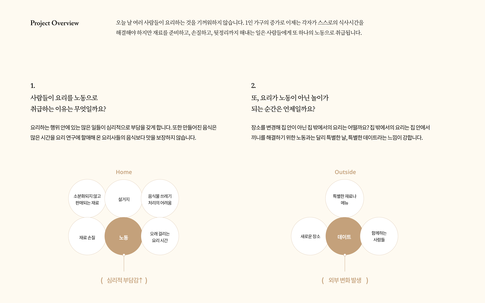
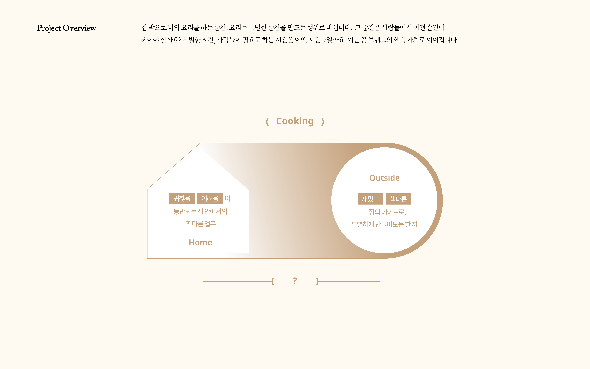
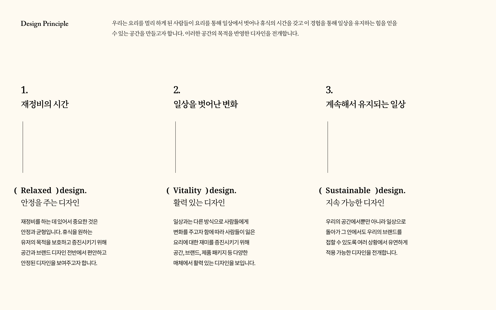
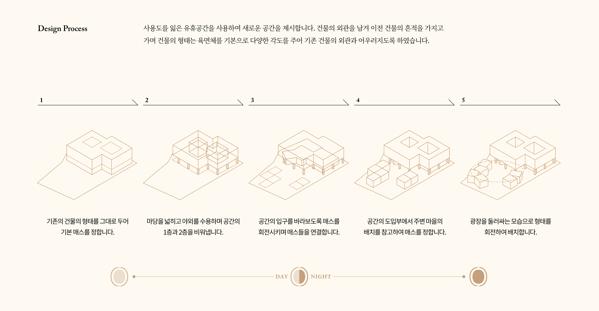
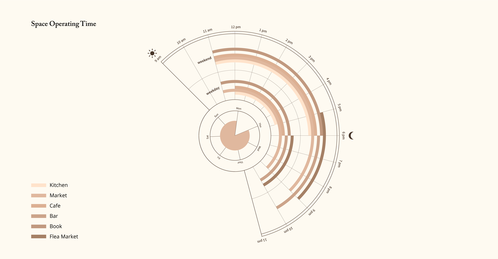
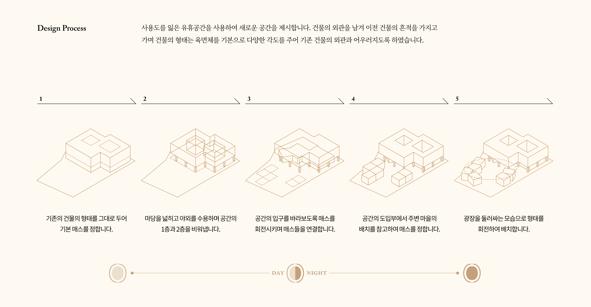
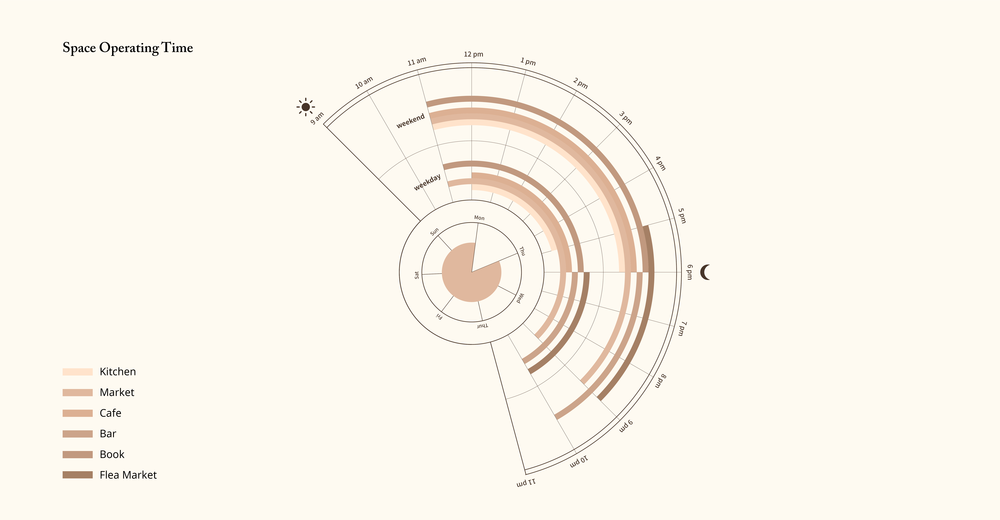
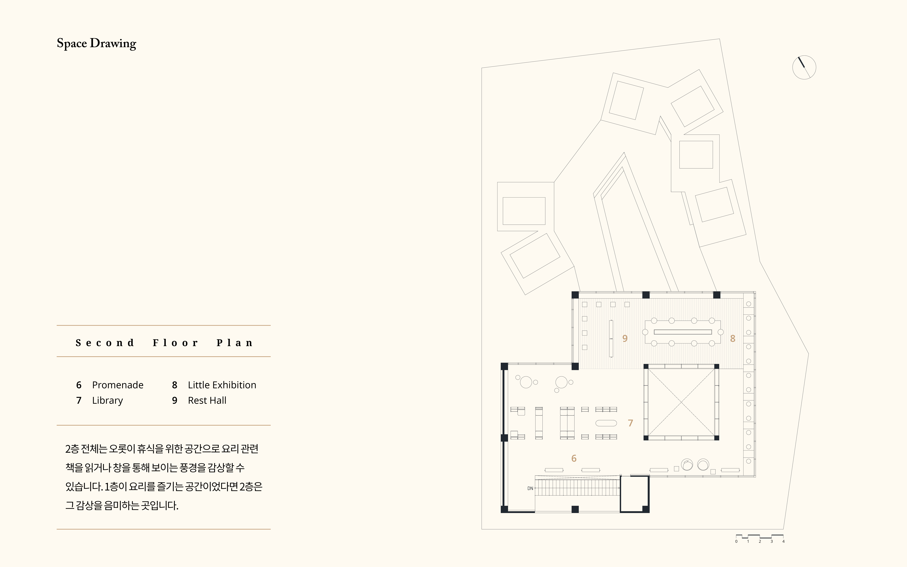
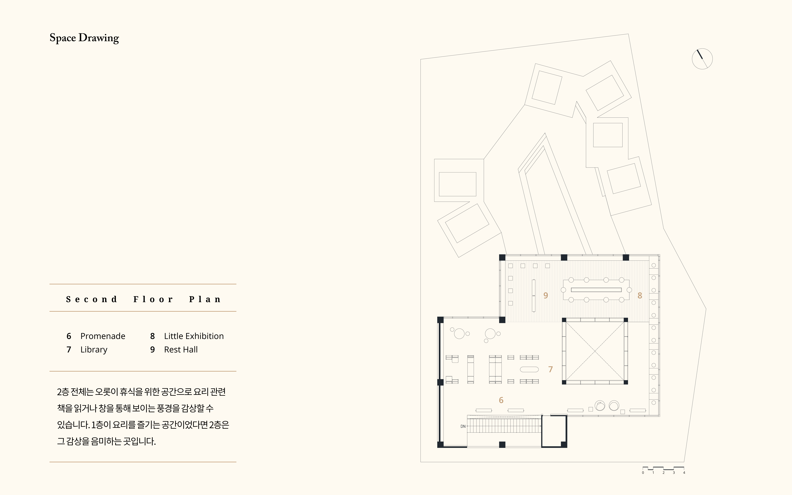

Own Table
In the modern world, there are various ways of eating dishes. Among these, I would like to talk about self-cooking. I would like to share the benefits and enjoyment of cooking, so I created a space that settles cooking as a culture, not just an act for eating dishes.





Concept
Own table was designed using the remaining buildings. It takes the form of a group of low houses. The surrounding space serves as a plaza to people.
 




 

Space
Own table is divided into the courtyard, the first and the second floor. Each part has a clear program, so it is possible to experience the space step by step.